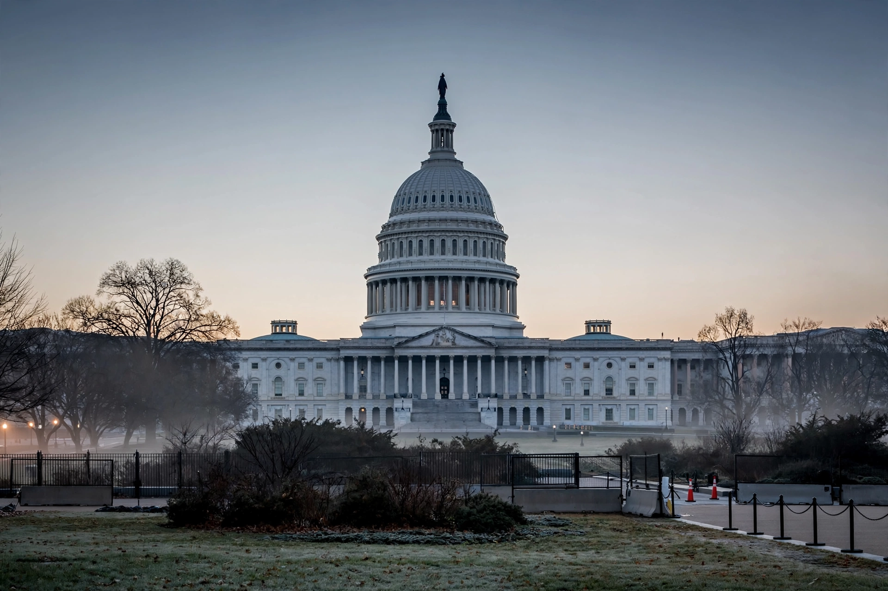

Top stories
Congress and the White House at the centre of a crowded Washington agenda

The Post's homepage leads with reporting from its Washington bureaus and correspondents around the world — politics, national security, and the courts — summarised here in general terms, as the exact lead story changes through the day.
Politics
Inside the negotiations shaping the next spending fight
Reporting and analysis from Capitol Hill and the White House.
World
Diplomats work to keep fragile ceasefire talks on track
Dispatches from the Post's foreign bureaus.
National
Communities rebuild after severe weather sweeps the Midwest
National coverage of weather, justice and education.
Investigations
The paper's investigative desk on money and influence in Washington
Long-running accountability reporting, presented as a standing feature of the homepage.
Latest & most read
- Live updates: the day in Washington
- What to know about the week ahead in Congress
- Markets steady as investors weigh new economic data
- Nationals and Commanders: the local sports scene
About
Background on this news organisation: Wikipedia article.